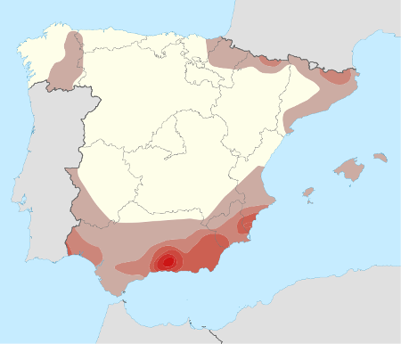

Riesgo sísmico o volcánico
| Entendemos por riesgo sísmico o riesgo volcánico como la probabilidad de que suceda un daño por la aparición de un terremoto o de una erupción volcánica. |
Para minimizar los daños provocados por estos fenómenos, es fundamental:
-
la predicción, realizando estudios para saber cuándo va a suceder.
La predicción es más fácil en el caso de las erupciones volcánicas, que suelen ir acompañadas de pequeños terremotos previos. En el caso de los terremotos su predicción es muy difícil.
-
la prevención, o el conjunto de medidas que reducen el riesgo (estudios del terreno, construcciones sismorresistentes, planes de emergencia....).
Riesgo sísmico y volcánico en España
En España, el riesgo volcánico, al estar situados en una zona continental alejada de cualquier anomalía térmica, es totalmente inexistente. De hecho, actualmente, en toda nuestra geografía sólo existe riesgo volcánico en las Islas Canarias.
En cuanto al riesgo sísmico, es algo mayor. En general, las características geológicas de nuestro país, con rocas que se fracturan con facilidad, favorecen que no haya terremotos de importancia. Por eso, el riesgo sísmico no es muy alto salvo en algunas zonas concretas, principalmente en las zonas sur y sureste (Granada, Almería). Otras zonas también activas son:
-
Zona noreste (desde los Pirineos hasta Cataluña y Teruel )
-
Zona noroeste (Galicia y Zamora).
El resto de la Península se considera sísmicamente inactiva o estable.
 |
| Mapa de peligrosidad sísmica |
Verdadero o falso
00:00:
Vídeo
En el siguiente vídeo se muestran imágenes de la erupción del Teneguía, en la isla de la Palma en 1971: